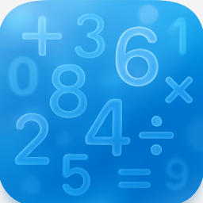

Numeriqo
Numeriqo is a mathematical puzzle game where players fill grids with numbers following Latin square rules while satisfying mathematical constraints within cages. Each cage contains a target value and mathematical operation that must be achieved using the numbers within that cage.
Features
- Multiple Grid Sizes: Play on 3x3, 4x4, 5x5, 6x6, 7x7, 8x8, or 9x9 grids.
- Dynamic Puzzle Generation: Each game generates a unique puzzle with a Latin square solution.
- Mathematical Operations: Cages use addition, subtraction, multiplication, and division.
- Cross-Platform: Native support for iPhone, iPad, Mac, and Apple Vision Pro.
- SwiftUI Interface: Modern, responsive user interface.
Screenshots


Design
Glass-like surfaces, gentle depth, no clutter.
Focus
Quiet colors, smooth motion, mindful difficulty.
Pro
Extra modes, bigger boards, smarter hints.